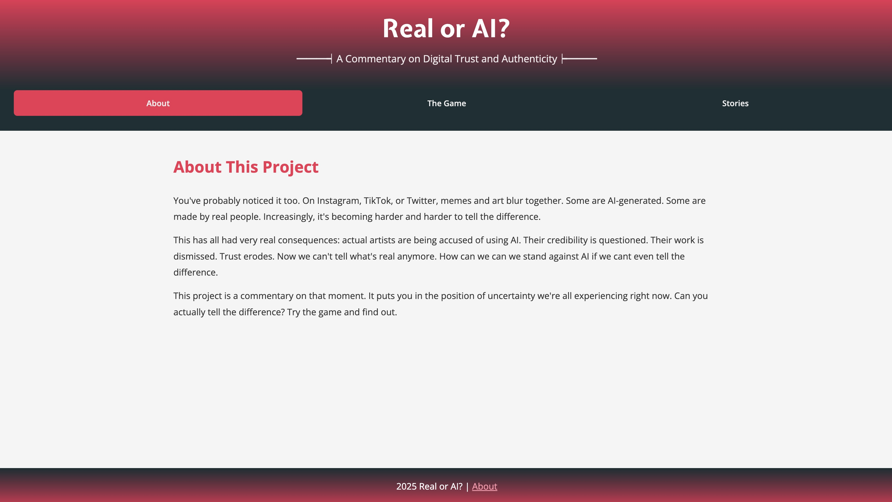

Real Or Ai

Real or AI is a short browser game that asks players to decide whether an image is AI-generated or not. The idea came from scrolling Instagram and seeing a lot of believable and not-so-believable AI art and memes. It was getting harder to tell the two apart, and real artists' work was being accused of being AI. That led to the question behind the project: can you differentiate between AI and real? The site includes the game itself, an about page, and a stories page linking to articles on the effects of AI on artists. The game is five images long.
I built the site in HTML, aiming for a simple, straightforward interface designed from the viewer's perspective as much as the creator's. Colors were chosen with Coolors, and UTF-8 symbols came from W3Schools, which is also where I learned to add the site's icon. The question mark favicon was the final touch, and it sums up the site well. The images were either photographed by me or generated with Google Gemini. I originally planned to use real artists' work that had been accused of being AI, but the direction changed during development. The stories page grew out of that shift, with three articles appealing to ethos, logos, and pathos, and a final story about a game similar to mine.